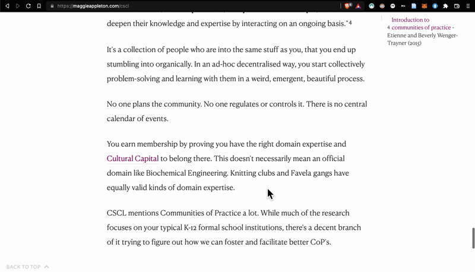
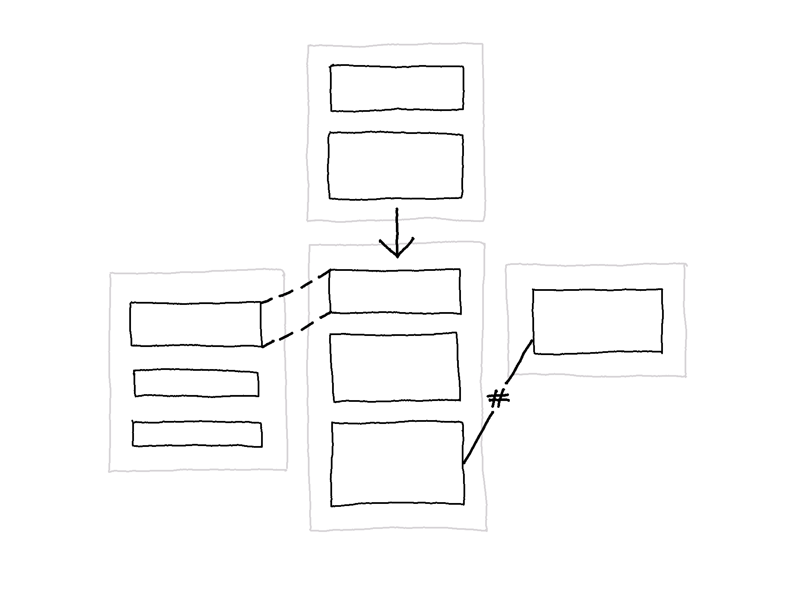
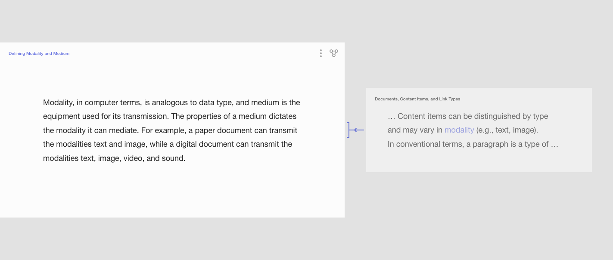
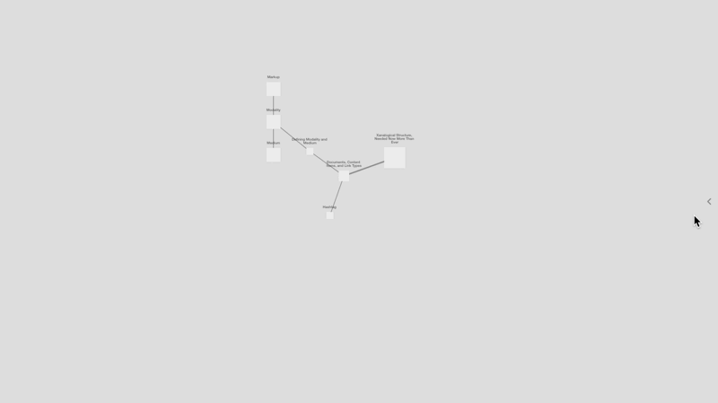

Reflection
The following summarizes and reflects on the process and result of this research project.
Summary of the Background
Documents are containers of content items (representing ideas, theories, facts, beliefs, and so on). By creating different types of connections among content items, an interconnective structure can be formed. Types of connections can be implicit or explicit and external or internal.
Model of different types of connections
Currently-available software does not offer ways for mapping the interconnective structure of documents, nor is it visualized. Instead, it remains an underlying structure. For example, computer documents are conceptualized as files inserted into folders, as if they are independent objects that fit neatly into a hierarchical structure. Even if a file conceptually belongs to multiple categories, it can only exist in one. If it is insisted that it belongs to more than one, then just as with a paper file, that digital file must be copied to the clipboard and pasted into another folder, and we now have two separate copies. Concepts and practices derived from paper documents have been transferred into the digital realm, inheriting the biases and material constraints. It begins at the computer operating system level but permeates the digital realm.
The problem is not that concepts derived from paper documents have been transferred to the digital realm, but how they have been transferred. This problem led to the research question: What new approaches can be taken to representational concepts for mapping and accessing the interconnective structure of documents to enable new ways of traversing documents through interaction, and what are the consequences?
The method is based on an iterative process of content creation, concept design, and creating interactive prototypes of a digital document system. An interactive prototype of a digital document system has been developed by taking new approaches to representational concepts for mapping and accessing the interconnective structure of documents. The concepts have been derived through examining prominent document systems considered influential in the evolution of information technologies:
- The Encyclopédie by Denis Diderot (1713-84) and Jean d’Alembert (1717-83)
- The work of Paul Otlet (1868-1944)
- The original hypertext project Xanadu by Ted Nelson (1937)
All three are grounded in particular notions about the structure of ideas and how knowledge evolves (discussed below). Distilled from these examples, Nexae was developed based on the following conditions:
1. Documents are modular.
The structure of ideas is multi-sequential, and knowledge is not fundamentally hierarchical. Subsequently, it was established that a digital document system must support mapping multiple structures, and hierarchy should not be the predominant structure into which content must fit. Knowledge is a process of decomposition and recomposition (analysis and synthesis). To realize the interconnective structure of documents and to facilitate that continuous process of decomposition and recomposition, Nexae was developed based on the conception that documents are modular.
2. There are multiple renditions of content.
Different view modes were developed to convey different information about the interconnective structure of documents, which, together with the capability to filter documents and links, offer multiple renditions of content.
3. Links are distinguished according to types of connections.
To facilitate the modularization of documents, links were conceptually and visually distinguished according to types of connections. Those links could be applied to realize the interconnective structure of documents, providing access through interaction.
4. It is a closed system.
For the system to support the developed concepts and how they interact, Nexae is envisioned as a closed system (i.e., no external links).
Development of the Concepts and the Prototype
Multiple Renditions Implemented as Two View Modes
Two view modes were developed to convey different information about the interconnective structure of documents, enabling zooming in and out to gain different perspectives on (and representations of) documents at different levels of detail. Zoomed-Out View is at the document collection level, and the Zoomed-In View is at the document level.
Model of Zoomed-Out View
Zoomed-Out View is a network diagram using a node-link model. All documents are viewed in relation to each other, conveying information about the size of each document (indicated by the node size) and the number of links (indicated by line thickness). Functioning as an infographic, it allows understanding a lot of information at a glance. The idea with this view mode is that it should be possible to configure the node-link structure based on document (and link) metadata. Documents could be grouped in clusters according to a shared subject, keywords, or writer name.
Model of Zoomed-Out View, cluster arrangement
Alternatively, the node-link structure could be arranged in the form of a timeline based on the date of creation or the date last modified.
*Model of Zoomed-Out View, timeline arrangement**
From Zoomed-Out View, a document could be selected to enter Zoomed-In View. In Zoomed-In View, the selected document is viewed in more detail, conveying information about the type of connections to/from that document.
Model of Zoomed-In View
Two Link Types: Transclusions and Non-Transclusions
Two link types were first developed based on two distinct types of connections: reused content items across documents (transclusions) and arbitrary conceptual connections (non-transclusions).
Transclusion is the inclusion of (a part of) a document into another document. In Nexae, content is transcluded rather than copied and pasted. And unlike the copy/paste method, when content items are transcluded, an automatic link is generated, keeping track and providing direct access to its original context. In line with the conception of documents as modular, through transclusion, a content item can exist in multiple documents. Transclusions enable, for example, a content item to be the third list item in one document and the title of the fifth section in another document.
Model of transclusions, allowing content items to exist in multiple documents
Different document versions will have shared content items, which are also transclusions. Content that is by convention inserted between quotation marks or in a block quote, for example, is a form of transclusion. Transclusions also include connections that exist between content transiting between different versions. The image below shows two different drafts and a document with reference material.
Both link types were developed with the capacity to point to an entire document or a particular part of a document.

In contrast, on the web, it is only possible to create links at the document level (i.e., at the webpage level). Even if a sentence refers to a particular part, it is not possible to link directly to it.
Model of a sentence referring to a particular part of another webpage
Selecting a link, therefore, results in blindly landing on the top of a webpage.
Model of selecting a link and landing on the top of another webpage
At this stage, the prototype had two link types.
Prototype with two link types: transclusions (dashed lines) and non-transclusions (solid lines)
Alteration to Non-Transclusion Type Links
The type of connections that are not transclusions could be further subcategorized, for example, as a comment, reference, tangent, definition, a lateral line of thought, or an opposing view.
 Model of subcategorized non-transclusions
Model of subcategorized non-transclusions
Instead of developing link types for every potential type of connection that is not transclusion, one link type (called taglink) was developed to accommodate them all.
Model of two link types: transclusion and taglink
Utilizing the common usage of hashtags, taglinks offer a way to describe the connection by attaching a label, enabling a grouping mechanism and the capability to filter to view a subset of the document collection based on any taxonomy.
Filtering Documents and Links
At this stage, links and documents could be filtered in a side menu (seen in the demo below).
Filtering in a side menu
Filtering by right-clicking directly on the links and selecting a taglink label (seen in the demo below) was also possible.
Filtering by selecting a taglink label
Representing Linked Documents as Aliases
At this stage, there are two main issues with the prototype. One issue was the visual incoherency of the crisscrossing lines, not offering much information about the connection for easy access. The other issue had to do with how linked documents are represented as icons (seen in the image below), not providing a preview of the link endpoint.
Prototype showing linked document as a preview icon
Another representation of linked documents was explored: visualizing linked documents as aliases.
 Model of opening a document (2) with linked documents represented as aliases (1,3)
Model of opening a document (2) with linked documents represented as aliases (1,3)
The image above shows single links between 1 and 3 and between 1 and 2. Between 2 and 3, there are two links. Selecting document 2 results in document 3 spawning into two aliases on the side of 2.
As seen in the two demos below, an animation showing a document splitting into two was implemented to indicate multiple aliases of the same document.
 Demo of opening a document with linked documents splitting into aliases (version 1)
Demo of opening a document with linked documents splitting into aliases (version 1)
 Demo of opening a document with linked documents splitting into aliases (version 2)
Demo of opening a document with linked documents splitting into aliases (version 2)
Discarding the crisscrossing lines, Zoomed-In View was redesigned based on the diagrammatic visual language of concept maps, such that the taglink label is shown when the cursor hovers a linked document (seen in the demo below).
Zoomed-In View: Hovering linked documents shows the taglink label
Applying a Diagrammatic Visual Language to Convey the Link Direction and Link Endpoint
To convey further information about a connection, the link direction and endpoint were also applied through a diagrammatic visual language.
Link direction denotes whether:
- a connection is established to a document, or
- from a document.
Link endpoints denotes whether there is a connection to:
- an entire document or
- a part of a document.
Most common on the web are one-directional links pointing to another (external) website or (internal) webpage. Since links do not indicate the destination, once it has been selected, the only way to retrieve the original webpage is to select the back button in the browser to navigate back.
Less common are backlinks, often implemented in what is called digital gardens. Backlinks are links that point from another document. If Document A contains a link to Document B, then Document B contains a backlink to Document A. Roam Research is known for popularizing backlinks, and others like Notion have followed suit. Usually, backlinks are presented in a list and commonly at the bottom, as seen in the three following images.

In the example above, selecting a backlink results in instantly landing on a page. In the example below, selecting backlinks results in the document opening on the side, enabling a comparison of the two linked documents without leaving the document.

In Notion, backlinks are hidden in a list that only expands upon deliberate action. Additionally, the list is underneath the title, not at the bottom.

In all these examples, links pointing outward are inline hyperlinks. Links pointing inward are in a separate list, which means that the backlinks do not make available where exactly the document has been mentioned (the link endpoint) nor how many times.
In Nexae, outward and inward links are not separated; both are inline, with the arrow symbol indicating the link direction. Additionally, because links can be attached at the content item level, unlike backlinks, the endpoint of a link provides direct access to the particular part of a document.
 Zoomed-In View (with a location frame of Zoomed-Out View in the upper-right corner)
Zoomed-In View (with a location frame of Zoomed-Out View in the upper-right corner)
An arrow symbol indicates the link direction. A line with a bracket indicates that the link points to the entire document, and a line without a bracket indicates it points to a particular part, and that particular part is shown in the alias window. For example, in the image below, a taglink connects the term transclusion to a document in which it is defined, which is appropriately labeled source.
Example of a taglink in Nexae
And in the image below is a transclusion type link showing the original context of the reused sentence fragment.
Example of transclusion in Nexae
Because all links are bidirectional, selecting an alias to access the original context means that it also links back (as seen in the demo below).
 Traversing by selecting a transclusion
Traversing by selecting a transclusion
A Third Link Type: Seqlink
At this stage, sequences of content items within documents can be nested to create a hierarchical structure. However, the two link types (transclusion and taglink) do not offer a way to set a sequence at the document level. To that end, another link type was developed (seqlinks), enabling establishing the order of documents in a sequence.
 Model of the three link types: transclusion, taglink, and seqlink
Determining the order of documents in a sequence, seqlinks accordingly point to the previous or the next document in a sequence. In combination with headings within a document, seqlinks allow the possibility of creating hierarchical structures. The sequential order of documents (and the possible hierarchical order of content items within a document) co-exists with the order offered by the other two link types. Seqlinks also enables the arrangement of the node-link structure (in Zoomed-Out View) to show the intended sequential order of documents (seen in the demo below).
 Zoomed-Out View, node-link structure arranged according to seqlinks
Zoomed-Out View, node-link structure arranged according to seqlinks
While in Zoomed-In View, it is possible to traverse documents by selecting seqlinks, as seen in the demo below. The location frame (in the upper right corner) shows which document is currently open (including linked documents as active links) in that sequence.
 Traversing documents by selecting seqlinks
Traversing documents by selecting seqlinks
Current State of the Prototype
In the current state of the prototype, there are three link types and two view modes in which it is possible to filter documents and links.
Three Link Types: Transclusions, Taglinks, and Seqlinks
All links are implemented through a diagrammatic visual language, specifically lines with arrow symbols to denote the direction, and taglinks and transclusions have alias windows showing the linked document. To convey further information about a connection, beyond the three link types, there are two link directions and two link endpoints, also conveyed through a diagrammatical visual language. The direction of a link is indicated by an arrow symbol. The link endpoints describe whether there is a connection to an entire document or a part of a document, providing direct access to that particular part. A bracketed line indicates that the link is attached to the entire document; an unbracketed line indicates that the link is attached to a particular content item within the document.
Switching View Modes
Switching view modes involves transition animations suggesting the movement of zooming in and out on documents. Switching from Zoomed-Out View to Zoomed-In View is done by opening a document, equivalent to zooming in on a document.

In Zoomed-In View, the selected document is viewed in more detail, conveying information about the type of connections to/from that document.
Traversing Documents
While in Zoomed-In View (i.e., having opened a document), opening a linked document by selecting one of its aliases also brings about a transition animation (seen in the demo below). Additionally, a location frame shows the open document as an active node seen through the perspective of Zoomed-Out View (in the upper-right corner). The location frame, originating with cartography, is implemented to support orientation.

In contrast, opening webpages by selecting hyperlinks occurs instantly (i.e., landing on a page without a transition animation) and does not make the destination explicitly apparent. Some implementations on the web attempt to make the destination of links more apparent, such as the preview windows seen in Wikipedia (but only for internal links, i.e., other Wikipedia pages).

These windows support quick decision-making for opening a link based on whether it is relevant content. However, these preview windows pop up and overlap the content, demanding attention and requiring deliberate action to get a glimpse. To circumvent these issues, Jeff Kaufman implemented preview windows so that they appear in a side panel rather than on top of the content.

In Nexae, linked documents are idle aliases that are always visible (unless hidden by filtering links and documents). Additionally, the preview windows in the examples above only show the top part of the linked webpage, not indicating whether the connection points to a particular part.
In Nexae, links can be attached on the document level but also at the content item level. Aliases can therefore bring into view the particular content item to/from which the open document is linked. The visual form of the link additionally aids in conveying whether the connection points to the entire document or a part of the document. As seen in the image below, a bracketed line indicates that it is attached to the entire document. An unbracketed line indicates that it is linked to a particular content item within the document (in which case, the linked content item is shown in purple).

The means of visually distinguishing different categories of information is by convention done typographically. The main text has a large font size, and additional information, such as footnotes, has a small font size, implying a hierarchical relationship. In Nexae, information categories are assigned through the three link types, not a predefined hierarchical structure. So information that is by convention embedded as footnotes would be in separate documents to which metadata can be attached and a taglink label that describes the content and the connection(s). There is no implicit hierarchy, and through filtering, it is possible to view a subcategory of the additional information.
Filtering Documents and Links
Both documents and links can be filtered (based on metadata) so that only a subset of the document collection is shown.
 Filtering by documents by author and links by taglink label
It may be useful, for example, to view only documents with the tag #terminology (seen in the demo below), or it may be useful to view only transclusions and taglinks labeled #source, which ultimately means looking only at connections to content items that are extracted or paraphrased or based on reference material.
Filtering by documents by author and links by taglink label
System of Internal Links, No External Links
To support the developed concepts and how they interact, Nexae is envisioned as a closed system.
To compare, websites built with wiki structures, such as digital gardens and Wikipedia, are very similar to the encyclopedia by Diderot in that they are semi-closed systems, meaning there is an emphasis on internal links, although establishing external links is possible. In both examples, internal and external links are somehow visually distinguished. In the Wikipedia system, internal links (links to other Wikipedia pages) are implemented as hyperlinks in the main text or panels with other categories of information located on the side of the main text. External links, which can be connections by reference or arbitrary connections, are implemented as footnotes, and the links are located at the bottom of the webpage. Selecting an external link results in leaving Wikipedia, whether that be a link to download a PDF or opening another website in another browser tab.
Digital gardens also contain internal and external links, applied as inline links and commonly visually distinguished. External links are visually distinguished from internal links by the northeast arrow symbol, as seen in the image below.
In sum, Wikipedia has two main link types (external and internal), distinguished through layout design.
 Model of internal and external link mechanisms in Wikipedia
Model of internal and external link mechanisms in Wikipedia
Nexae has been designed with no external links because, in order to have direct access to a linked document, it must exist in Nexae. Content is added rather than linked to external sources. The only distinction is between private documents (only accessible to the person who added them) and public (accessible to everyone or a selection of people in Nexae).
Model of internal links (that can be private or public) in Nexae
Further developments are proposed in the next entry.